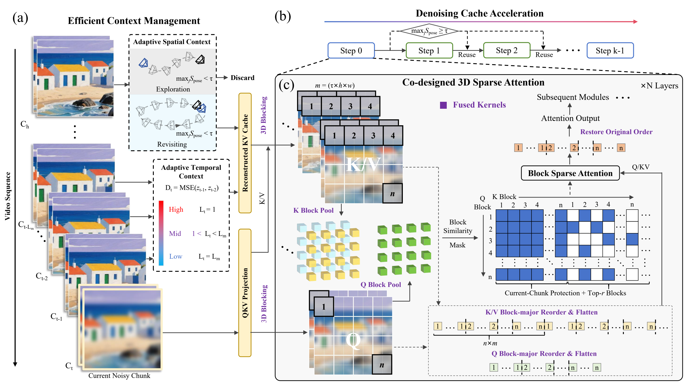
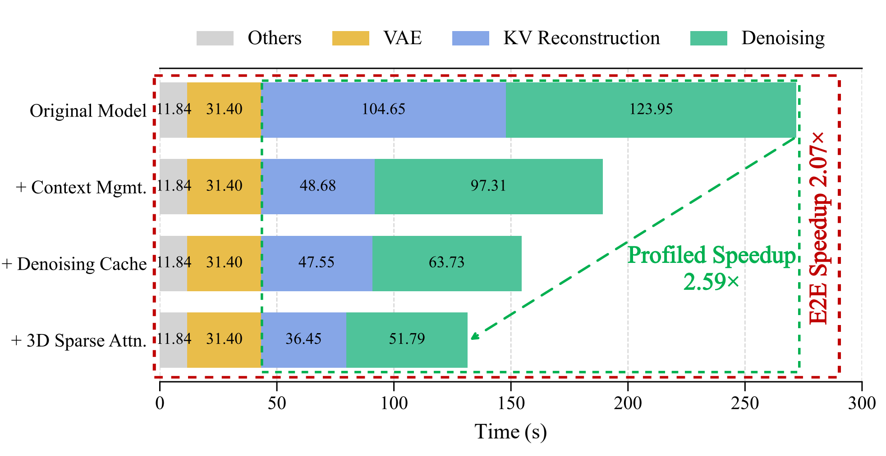
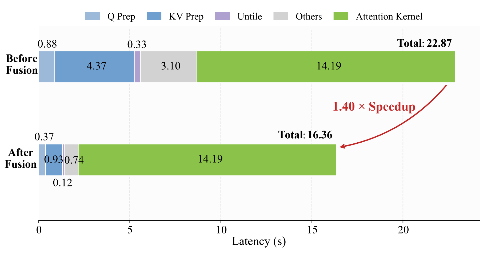

Light Interaction: Training-Free Inference Acceleration for Interactive Video World Models
Preprint
1Zhejiang University 2NVIDIA
*Corresponding author
Abstract
Interactive video world models generate video chunk by chunk in response to user-controlled camera movements, paving the way toward real-time game simulation, virtual scene navigation, and embodied AI training. However, scaling to long interactive trajectories is prohibitively expensive: generating a 10-second video on HY-WorldPlay with a single A100 GPU can take more than 200 seconds due to growing context memory, quadratic attention complexity, and repeated denoising steps.
We present Light Interaction, a training-free acceleration framework for interactive video world models. It combines adaptive context management, denoising cache acceleration, and hardware-software co-designed sparse attention with fused kernels. Evaluated on HY-WorldPlay and Matrix-Game-3.0, Light Interaction achieves up to 2.59× speedup without model retraining while maintaining competitive visual quality.
Overview

- Adaptive Context Management: Selects valid temporal context and retrieved spatial memory using camera-pose-aware similarity and local latent dynamics.
- Denoising Cache Acceleration: Reuses early-step model outputs during reliable revisiting while preserving the final denoising step for quality correction.
- Hardware-Software Co-designed 3D Sparse Attention: Sparsifies historical visual KV blocks and uses fused kernels to reduce layout conversion and gather/scatter overhead.
Gallery
Matrix-Game-3.0 720P
Results


BibTeX
@article{lu2026lightinteraction,
title = {Light Interaction: Training-Free Inference Acceleration for Interactive Video World Models},
author = {Lu, Jiacheng and Zhu, Haoyi and Yi, Sipei and Xie, Enze and Li, Yu and Zhuo, Cheng},
journal = {arXiv preprint},
year = {2026}
}